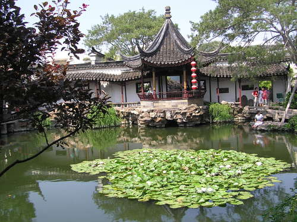

Note: It's possible to extend dates for students who have to meet special requirements (e.g.,scholarships).
Application Deadline: March 27, 2017
Late application can be considered; please e-mail Prof. Lu at CUNYinChina@brooklyn.cuny.edu.
1.Beijing
2.Xi’an
3.Nanjing
4.Suzhou
5.Shanghai
With side trips to: Hong Kong, Yangzhou & Yellow Mountain (i.e., Huangshan)
The program is designed in such a way that all travel is education-related, with an academic focus on the courses we teach at real sites in China. The cities we have chosen to visit are all sites of historic and cultural importance.
1.ARTD 3108: Art of Ancient China
2.BUSN 3175: Asian Business
3.CLAS 1110 (i.e., CORC 1110): Classical Cultures (China)-satisfies Pathways Flexible Core Requirement
4.CORC 3202: Classical Philosophies of India and China -satisfies Pathways College Option Requirement
5.CORC 3206 (Core Curriculum): Development of the Silk Road --satisfies Pathways College Option Requirement
6.CHIN 1010: Beginners Chinese-Level I
7.CHIN 1020: Intensive Elementary Chinese-Level II
8.CHIN 1030: Intensive Intermediate Chinese-Level III
9.CHIN 2024: Advanced (Chinese) Language Skills
10.HIST 3005: The Shaping of the Modern World -satisfies Pathways Flexible Core World Cultures & Global Issues Requirement
11.HIST 3534: Revolutionary China
12.SPEC 1619: Intercultural Communication
13.SPEC 2623: Business Communication (cross-cultural perspectives)
14.TVRA 3871: Elements of TV Field Production
-- TVRA 4849: International Documentary Production
-- TVRA 5010: Independent Projects
15.SPEC 7296X - Special Topic Course for Graduate Students
(For more information on the courses, visit Coursework page of this website.)
1.All courses are taught by Brooklyn College faculty, for CUNY-BC credit
2.Visits to Chinese campuses in Beijing, Xi'an, Nanjing or Shanghai and meet with Chinese students
3.Group travel to 5 famous Chinese cities: Beijing, Xi’an, Nanjing, Suzhou & Shanghai
4.Field trips, with lectures & academic discussions, to sites of historical and cultural importance (e.g., Great Wall, Tiananmen Square, Forbidden City, Terra Cotta Warriors, Buddhist Temple, Confucius Temple,Great Mosque & Muslim Quarter, Xi'an Tangbo Art Museum, History Museum, Tea House, Silk Processing Display, Cloisonné Art, Shanghai Bund, French Concession & Xintiandi, Shanghai Pudong Financial District, etc.)
5.See how an ancient country is being rapidly modernized and transformed
6.Experience Chinese culture, interact with locals, have a real feel of Chinese life
7.Travel and sightseeing are all arranged by professional travel agencies
8.Help arrange side trips to additonal local tourist attractions: Hong Kong, Yangzhou & Yellow Mountain（info on Side Trips)

1.Round-trip international tickets (NYC to Beijing; Shanghai to NYC)
2.Transportation within & between cities in China
3.Hotels in all the cities in China
4.Admission tickets to scenic spots for program field trips
5.CISI International travel and health insurance
6.Meals
Open to all CUNY campuses & any other US campuses. Both qualified CUNY and non-CUNY undergraduate and graduate students can enroll. Some scholarships & Financial Aid may be available, depending on student's eligibility.
Contact Ms. Garrick, Tel: 718-951-5225.
Or, send e-mail to Prof. Lu at cunyinchina@brooklyn.cuny.edu
Dept. of Speech Communication Arts & Sciences
3439 Boylan Hall
Brooklyn College-CUNY
2900 Bedford Avenue
Brooklyn, NY 11210